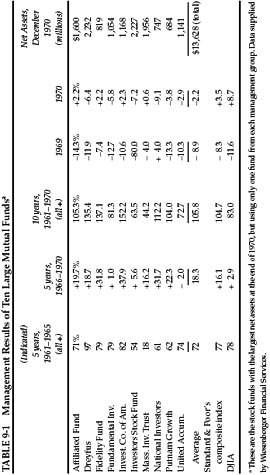
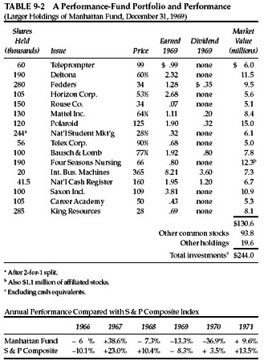
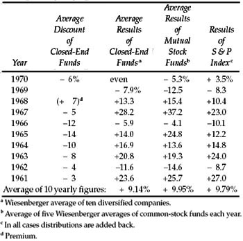
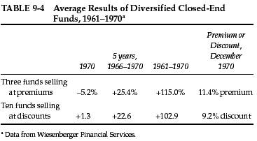
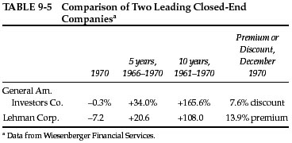

O ne course open to the defensive investor is to put his money into investment-company shares. Those that are redeemable on demand by the holder, at net asset value, are commonly known as “mutual funds” (or “open-end funds”). Most of these are actively selling additional shares through a corps of salesmen. Those with nonredeemable shares are called “closed-end” companies or funds; the number of their shares remains relatively constant. All of the funds of any importance are registered with the Securities & Exchange Commission (SEC), and are subject to its regulations and controls. *
The industry is a very large one. At the end of 1970 there were 383 funds registered with the SEC, having assets totaling $54.6 billions. Of these 356 companies, with $50.6 billions, were mutual funds, and 27 companies with $4.0 billions, were closed-end. †
There are different ways of classifying the funds. One is by the broad division of their portfolio; they are “balanced funds” if they have a significant (generally about one-third) component of bonds, or “stock-funds” if their holdings are nearly all common stocks. (There are some other varieties here, such as “bond funds,” “hedge funds,” “letter-stock funds,” etc.) * Another is by their objectives, as their primary aim is for income, price stability, or capital appreciation (“growth”). Another distinction is by their method of sale. “Load funds” add a selling charge (generally about 9% of asset value on minimum purchases) to the value before charge. 1 Others, known as “no-load” funds, make no such charge; the managements are content with the usual investment-counsel fees for handling the capital. Since they cannot pay salesmen’s commissions, the size of the no-load funds tends to be on the low side. † The buying and selling prices of the closed-end funds are not fixed by the companies, but fluctuate in the open market as does the ordinary corporate stock.
Most of the companies operate under special provisions of the income-tax law, designed to relieve the shareholders from double taxation on their earnings. In effect, the funds must pay out virtually all their ordinary income—i.e., dividends and interest received, less expenses. In addition they can pay out their realized long-term profits on sales of investments—in the form of “capital-gains dividends”—which are treated by the shareholder as if they were his own security profits. (There is another option here, which we omit to avoid clutter.) † Nearly all the funds have but one class of security outstanding. A new wrinkle, introduced in 1967, divides the capitalization into a preferred issue, which will receive all the ordinary income, and a capital issue, or common stock, which will receive all the profits on security sales. (These are called “dual-purpose funds.”) *
Many of the companies that state their primary aim is for capital gains concentrate on the purchase of the so-called “growth stocks,” and they often have the word “growth” in their name. Some specialize in a designated area such as chemicals, aviation, overseas investments; this is usually indicated in their titles.
The investor who wants to make an intelligent commitment in fund shares has thus a large and somewhat bewildering variety of choices before him—not too different from those offered in direct investment. In this chapter we shall deal with some major questions, viz:
1. Is there any way by which the investor can assure himself of better than average results by choosing the right funds? (Subquestion: What about the “performance funds”?) †
2. If not, how can he avoid choosing funds that will give him worse than average results?
3. Can he make intelligent choices between different types of funds—e.g., balanced versus all-stock, open-end versus closed-end, load versus no-load?
Investment-Fund Performance as a Whole
Before trying to answer these questions we should say something about the performance of the fund industry as a whole. Has it done a good job for its shareholders? In the most general way, how have fund investors fared as against those who made their investments directly? We are quite certain that the funds in the aggregate have served a useful purpose. They have promoted good habits of savings and investment; they have protected countless individuals against costly mistakes in the stock market; they have brought their participants income and profits commensurate with the overall returns from common stocks. On a comparative basis we would hazard the guess that the average individual who put his money exclusively in investment-fund shares in the past ten years has fared better than the average person who made his common-stock purchases directly.
The last point is probably true even though the actual performance of the funds seems to have been no better than that of common stocks as a whole, and even though the cost of investing in mutual funds may have been greater than that of direct purchases. The real choice of the average individual has not been between constructing and acquiring a well-balanced common-stock portfolio or doing the same thing, a bit more expensively, by buying into the funds. More likely his choice has been between succumbing to the wiles of the doorbell-ringing mutual-fund salesman on the one hand, as against succumbing to the even wilier and much more dangerous peddlers of second- and third-rate new offerings. We cannot help thinking, too, that the average individual who opens a brokerage account with the idea of making conservative common-stock investments is likely to find himself beset by untoward influences in the direction of speculation and speculative losses; these temptations should be much less for the mutual-fund buyer.
But how have the investment funds performed as against the general market? This is a somewhat controversial subject, but we shall try to deal with it in simple but adequate fashion. Table 9-1 gives some calculated results for 1961–1970 of our ten largest stock funds at the end of 1970, but choosing only the largest one from each management group. It summarizes the overall return of each of these funds for 1961–1965, 1966–1970, and for the single years 1969 and 1970. We also give average results based on the sum of one share of each of the ten funds. These companies had combined assets of over $15 billion at the end of 1969, or about one-third of all the common-stock funds. Thus they should be fairly representative of the industry as a whole. (In theory, there should be a bias in this list on the side of better than industry performance, since these better companies should have been entitled to more rapid expansion than the others; but this may not be the case in practice.)

Some interesting facts can be gathered from this table. First, we find that the overall results of these ten funds for 1961–1970 were not appreciably different from those of the Standard & Poor’s 500-stock composite average (or the S & P 425-industrial stock average). But they were definitely better than those of the DJIA. (This raises the intriguing question as to why the 30 giants in the DJIA did worse than the much more numerous and apparently rather miscellaneous list used by Standard & Poor’s.) * A second point is that the funds’ aggregate performance as against the S & P index has improved somewhat in the last five years, compared with the preceding five. The funds’ gain ran a little lower than S & P’s in 1961–1965 and a little higher than S & P’s in 1966–1970. The third point is that a wide difference exists between the results of the individual funds.
We do not think the mutual-fund industry can be criticized for doing no better than the market as a whole. Their managers and their professional competitors administer so large a portion of all marketable common stocks that what happens to the market as a whole must necessarily happen (approximately) to the sum of their funds. (Note that the trust assets of insured commercial banks included $181 billion of common stocks at the end of 1969; if we add to this the common stocks in accounts handled by investment advisers, plus the $56 billion of mutual and similar funds, we must conclude that the combined decisions of these professionals pretty well determine the movements of the stock averages, and that the movement of the stock averages pretty well determines the funds’ aggregate results.)
Are there better than average funds and can the investor select these so as to obtain superior results for himself? Obviously all investors could not do this, since in that case we would soon be back where we started, with no one doing better than anyone else. Let us consider the question first in a simplified fashion. Why shouldn’t the investor find out what fund has made the best showing of the lot over a period of sufficient years in the past, assume from this that its management is the most capable and will therefore do better than average in the future, and put his money in that fund? This idea appears the more practicable because, in the case of the mutual funds, he could obtain this “most capable management” without paying any special premium for it as against the other funds. (By contrast, among noninvestment corporations the best-managed companies sell at correspondingly high prices in relation to their current earnings and assets.)
The evidence on this point has been conflicting over the years. But our Table 9-1 covering the ten largest funds indicates that the results shown by the top five performers of 1961–1965 carried over on the whole through 1966–1970, even though two of this set did not do as well as two of the other five. Our studies indicate that the investor in mutual-fund shares may properly consider comparative performance over a period of years in the past, say at least five, provided the data do not represent a large net upward movement of the market as a whole. In the latter case spectacularly favorable results may be achieved in unorthodox ways—as will be demonstrated in our following section on “performance” funds. Such results in themselves may indicate only that the fund managers are taking undue speculative risks, and getting away with same for the time being.
“Performance” Funds
One of the new phenomena of recent years was the appearance of the cult of “performance” in the management of investment funds (and even of many trust funds). We must start this section with the important disclaimer that it does not apply to the large majority of well-established funds, but only to a relatively small section of the industry which has attracted a disproportionate amount of attention. The story is simple enough. Some of those in charge set out to get much better than average (or DJIA) results. They succeeded in doing this for a while, garnering considerable publicity and additional funds to manage. The aim was legitimate enough; unfortunately, it appears that, in the context of investing really sizable funds, the aim cannot be accomplished without incurring sizable risks. And in a comparatively short time the risks came home to roost.
Several of the circumstances surrounding the “performance” phenomenon caused ominous headshaking by those of us whose experience went far back—even to the 1920s—and whose views, for that very reason, were considered old-fashioned and irrelevant to this (second) “New Era.” In the first place, and on this very point, nearly all these brilliant performers were young men—in their thirties and forties—whose direct financial experience was limited to the all but continuous bull market of 1948–1968. Secondly, they often acted as if the definition of a “sound investment” was a stock that was likely to have a good rise in the market in the next few months. This led to large commitments in newer ventures at prices completely disproportionate to their assets or recorded earnings. They could be “justified” only by a combination of naïve hope in the future accomplishments of these enterprises with an apparent shrewdness in exploiting the speculative enthusiasms of the uninformed and greedy public.
This section will not mention people’s names. But we have every reason to give concrete examples of companies. The “performance fund” most in the public’s eye was undoubtedly Manhattan Fund, Inc., organized at the end of 1965. Its first offering was of 27 million shares at $9.25 to $10 per share. The company started out with $247 million of capital. Its emphasis was, of course, on capital gains. Most of its funds were invested in issues selling at high multipliers of current earnings, paying no dividends (or very small ones), with a large speculative following and spectacular price movements. The fund showed an overall gain of 38.6% in 1967, against 11% for the S & P composite index. But thereafter its performance left much to be desired, as is shown in Table 9-2.

The portfolio of Manhattan Fund at the end of 1969 was unorthodox to say the least. It is an extraordinary fact that two of its largest investments were in companies that filed for bankruptcy within six months thereafter, and a third faced creditors’ actions in 1971. It is another extraordinary fact that shares of at least one of these doomed companies were bought not only by investment funds but by university endowment funds, the trust departments of large banking institutions, and the like. * A third extraordinary fact was that the founder-manager of Manhattan Fund sold his stock in a separately organized management company to another large concern for over $20 million in its stock; at that time the management company sold had less than $1 million in assets. This is undoubtedly one of the greatest disparities of all times between the results for the “manager” and the “managees.”
A book published at the end of 1969 2 provided profiles of nineteen men “who are tops at the demanding game of managing billions of dollars of other people’s money.” The summary told us further that “they are young…some earn more than a million dollars a year…they are a new financial breed…they all have a total fascination with the market…and a spectacular knack for coming up with winners.” A fairly good idea of the accomplishments of this top group can be obtained by examining the published results of the funds they manage. Such results are available for funds directed by twelve of the nineteen persons described in The Money Managers. Typically enough, they showed up well in 1966, and brilliantly in 1967. In 1968 their performance was still good in the aggregate, but mixed as to individual funds. In 1969 they all showed losses, with only one managing to do a bit better than the S & P composite index. In 1970 their comparative performance was even worse than in 1969.
We have presented this picture in order to point a moral, which perhaps can best be expressed by the old French proverb: Plus ça change, plus c’est la même chose. Bright, energetic people—usually quite young—have promised to perform miracles with “other people’s money” since time immemorial. They have usually been able to do it for a while—or at least to appear to have done it—and they have inevitably brought losses to their public in the end. * About a half century ago the “miracles” were often accompanied by flagrant manipulation, misleading corporate reporting, outrageous capitalization structures, and other semifraudulent financial practices. All this brought on an elaborate system of financial controls by the SEC, as well as a cautious attitude toward common stocks on the part of the general public. The operations of the new “money managers” in 1965–1969 came a little more than one full generation after the shenanigans of 1926–1929. † The specific malpractices banned after the 1929 crash were no longer resorted to—they involved the risk of jail sentences. But in many corners of Wall Street they were replaced by newer gadgets and gimmicks that produced very similar results in the end. Outright manipulation of prices disappeared, but there were many other methods of drawing the gullible public’s attention to the profit possibilities in “hot” issues. Blocks of “letter stock” 3 could be bought well below the quoted market price, subject to undisclosed restrictions on their sale; they could immediately be carried in the reports at their full market value, showing a lovely and illusory profit. And so on. It is amazing how, in a completely different atmosphere of regulation and prohibitions, Wall Street was able to duplicate so much of the excesses and errors of the 1920s.
No doubt there will be new regulations and new prohibitions. The specific abuses of the late 1960s will be fairly adequately banned from Wall Street. But it is probably too much to expect that the urge to speculate will ever disappear, or that the exploitation of that urge can ever be abolished. It is part of the armament of the intelligent investor to know about these “Extraordinary Popular Delusions,” 4 and to keep as far away from them as possible.
The picture of most of the performance funds is a poor one if we start after their spectacular record in 1967. With the 1967 figures included, their overall showing is not at all disastrous. On that basis one of “The Money Managers” operators did quite a bit better than the S & P composite index, three did distinctly worse, and six did about the same. Let us take as a check another group of performance funds—the ten that made the best showing in 1967, with gains ranging from 84% up to 301% in that single year. Of these, four gave a better overall four-year performance than the S & P index, if the 1967 gains are included; and two excelled the index in 1968–1970. None of these funds was large, and the average size was about $60 million. Thus, there is a strong indication that smaller size is a necessary factor for obtaining continued outstanding results.
The foregoing account contains the implicit conclusion that there may be special risks involved in looking for superior performance by investment-fund managers. All financial experience up to now indicates that large funds, soundly managed, can produce at best only slightly better than average results over the years. If they are unsoundly managed they can produce spectacular, but largely illusory, profits for a while, followed inevitably by calamitous losses. There have been instances of funds that have consistently outperformed the market averages for, say, ten years or more. But these have been scarce exceptions, having most of their operations in specialized fields, with self-imposed limits on the capital employed—and not actively sold to the public. *
Closed-End versus Open-End Funds
Almost all the mutual funds or open-end funds, which offer their holders the right to cash in their shares at each day’s valuation of the portfolio, have a corresponding machinery for selling new shares. By this means most of them have grown in size over the years. The closed-end companies, nearly all of which were organized a long time ago, have a fixed capital structure, and thus have diminished in relative dollar importance. Open-end companies are being sold by many thousands of energetic and persuasive salesmen, the closed-end shares have no one especially interested in distributing them. Consequently it has been possible to sell most “mutual funds” to the public at a fixed premium of about 9% above net asset value (to cover salesmen’s commissions, etc.), while the majority of close-end shares have been consistently obtainable at less than their asset value. This price discount has varied among individual companies, and the average discount for the group as a whole has also varied from one date to another. Figures on this point for 1961–1970 are given in Table 9-3.
It does not take much shrewdness to suspect that the lower relative price for closed-end as against open-end shares has very little to do with the difference in the overall investment results between the two groups. That this is true is indicated by the comparison of the annual results for 1961–1970 of the two groups included in Table 9-3.
Thus we arrive at one of the few clearly evident rules for investors’ choices. If you want to put money in investment funds, buy a group of closed-end shares at a discount of, say, 10% to 15% from asset value, instead of paying a premium of about 9% above asset value for shares of an open-end company. Assuming that the future dividends and changes in asset values continue to be about the same for the two groups, you will thus obtain about one-fifth more for your money from the closed-end shares.
The mutual-fund salesman will be quick to counter with the argument: “Ah, but if you own closed-end shares you can never be sure what price you can sell them for. The discount can be greater than it is today, and you will suffer from the wider spread. With our shares you are guaranteed the right to turn in your shares at 100% of asset value, never less.” Let us examine this argument a bit; it will be a good exercise in logic and plain common sense. Question: Assuming that the discount on closed-end shares does widen, how likely is it that you will be worse off with those shares than with an otherwise equivalent purchase of open-end shares?
TABLE 9-3 Certain Data on Closed-End Funds, Mutual Funds, and S & P Composite Index

This calls for a little arithmetic. Assume that Investor A buys some open-end shares at 109% of asset value, and Investor B buys closed-end shares at 85% thereof, plus 1½% commission. Both sets of shares earn and pay 30% of this asset value in, say, four years, and end up with the same value as at the beginning. Investor A redeems his shares at 100% of value, losing the 9% premium he paid. His overall return for the period is 30% less 9%, or 21% on asset value. This, in turn, is 19% on his investment. How much must Investor B realize on his closed-end shares to obtain the same return on his investment as Investor A? The answer is 73%, or a discount of 27% from asset value. In other words, the closed-end man could suffer a widening of 12 points in the market discount (about double) before his return would get down to that of the open-end investor. An adverse change of this magnitude has happened rarely, if ever, in the history of closed-end shares. Hence it is very unlikely that you will obtain a lower overall return from a (representative) closed-end company, bought at a discount, if its investment performance is about equal to that of a representative mutual fund. If a small-load (or no-load) fund is substituted for one with the usual “8½%” load, the advantage of the closed-end investment is of course reduced, but it remains an advantage.

The fact that a few closed-end funds are selling at premiums greater than the true 9% charge on most mutual funds introduces a separate question for the investor. Do these premium companies enjoy superior management of sufficient proven worth to warrant their elevated prices? If the answer is sought in the comparative results for the past five or ten years, the answer would appear to be no. Three of the six premium companies have mainly foreign investments. A striking feature of these is the large variation in prices in a few years’ time; at the end of 1970 one sold at only one-quarter of its high, another at a third, another at less than half. If we consider the three domestic companies selling above asset value, we find that the average of their ten-year overall returns was somewhat better than that of ten discount funds, but the opposite was true in the last five years. A comparison of the 1961–1970 record of Lehman Corp. and of General American Investors, two of our oldest and largest closed-end companies, is given in Table 9-5. One of these sold 14% above and the other 7.6% below its net-asset value at the end of 1970. The difference in price to net-asset relationships did not appear warranted by these figures.

Investment in Balanced Funds
The 23 balanced funds covered in the Wiesenberger Report had between 25% and 59% of their assets in preferred stocks and bonds, the average being just 40%. The balance was held in common stocks. It would appear more logical for the typical investor to make his bond-type investments directly, rather than to have them form part of a mutual-fund commitment. The average income return shown by these balanced funds in 1970 was only 3.9% per annum on asset value, or say 3.6% on the offering price. The better choice for the bond component would be the purchase of United States savings bonds, or corporate bonds rated A or better, or tax-free bonds, for the investor’s bond portfolio.